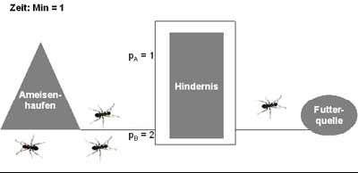
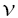
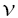
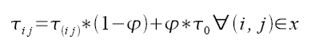
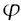

Der erste Ameisenalgorithmus wurde 1992 von Marco Dorigo vorgestellt und zunächst auf das Travelling Salesman Problem angewandt. Darüber hinaus stellt der Algorithmus jedoch eine Metaheuristik dar, die auf viele verschiedene Optimierungsprobleme anwendbar ist. So wurden inzwischen etliche Varianten des ursprünglichen Algorithmus entwickelt. Grundlegend ist hierbei die Analogie zur Futtersuche von Ameisen. Die Schwarmintelligenz der Ameisen beim Finden von kürzesten Wegen bei der Suche nach Nahrung wurde von Dorigo zunächst in seinem so genannten Ant System adaptiert.
Hier soll zunächst das natürliche Vorbild des Algorithmus dargestellt werden. Ausgehend von dem Mechanismus, dessen sich Ameisen bei der Suche nach Futter bedienen, wird daraufhin die Formalisierung dieses Vorgangs erläutert. In diesem Zusammenhang sollen die grundlegenden Eigenschaften des von Dorigo entwickelten Algorithmus vorgestellt werden. Des weiteren erfolgt eine Darstellung des Verschlüsselungsverfahren, auf das der Algorithmus im Laufe dieser Arbeit angewandt wurde. Es schließt sich eine Verdeutlichung an, wie der Ameisenalgorithmus an das vorliegende Problem adaptiert wurde. Schließlich werden die erzielten Ergebnisse des Verfahrens dargestellt und bewertet, sowie mögliche Erweiterungen diskutiert.
4.1 Das natürliche Vorbild
Beobachtungen von Ameisen haben gezeigt, dass es ihnen gelingt, ihre Ameisenstraßen zumeist auf direktem Weg zwischen dem Nest und der jeweiligen Futterquelle zu errichten. Da es sich bei diesen Insekten jedoch um sehr einfache Tiere mit stark beschränkten kognitiven Fähigkeiten handelt, sind sie für sich genommen nicht in der Lage, diese logistische Leistung zu vollbringen. Stattdessen verfügen Ameisenkolonien über eine Art "kollektives Gedächtnis", das sie in die Lage versetzt, die Ameisenstraßen optimal zu errichten. Erst durch selbstorganisiertes Zusammenwirken ist es den Ameisen möglich, komplexe Informationen über ihre Umwelt festzuhalten, was die Möglichkeiten einer einzelnen Ameise bei weitem übersteigt. Hierbei ist keine zentrale Koordination der Suche nach Futter und der Errichtung der Ameisenstraßen notwendig. Die jeweiligen Entscheidungen über ihr Handeln trifft jede Ameise für sich.
Das Auffinden des kürzesten Weges zwischen dem Ameisennest und einer Futterquelle erfolgt mithilfe von Duftstoffen, den so genannten Pheromonen. Zunächst erkunden die Ameisen relativ zufällig die Umgebung ihres Nestes. Findet dabei eine Ameise eine größere Menge Futter, so trägt sie einen Teil davon zurück zum Nest und stößt dabei Pheromone aus. Die Masse an Pheromon, die hierbei freigesetzt wird, hängt von der Qualität und Quantität der gefundenen Nahrung ab. Je nach Ameisenart erfolgt die Ablage des Pheromons auch durchgängig, also bevor Futter gefunden werden konnte.
Weitere Ameisen, die das Nest verlassen, tendieren nun eher dazu, einen Weg einzuschlagen, welcher bereits mit möglichst viel Pheromon gekennzeichnet ist. Indem weitere Ameisen den Weg einschlagen, erhöht sich die Masse an Duftstoffen und der Weg wird zunehmend attraktiver für die

folgenden Artgenossen.
Haben nun mehrere Ameisen unterschiedliche Wege zu der gleichen Futterquelle entdeckt, wird durch den Mechanismus der Pheromonablage schon nach kurzer Zeit der kürzere stärker markiert sein. Dieses ergibt sich, da für den längeren Weg mehr Zeit benötigt wird. Je mehr Ameisen pro Zeiteinheit den Weg passieren, desto mehr können auch Pheromon freisetzen. Entsprechend stärker wird die Markierung durch den Duftstoff.

Geht man beispielsweise von einem halb so langen Weg aus, so erreicht von den gleichzeitig startenden Ameisen (vgl. Abbildung 13) auf bisher nicht mit Pheromon markierten Wegen ( PA=0 und PB=0 ) die Ameise auf dem kürzeren Weg bereits die Futterquelle, während diejenige auf dem längeren Pfad, diesen erst zur Hälfte passiert hat (vgl. Abbildung 14). Die erste Ameise ist schon wieder zurück beim Nest und hat den Weg ein weiteres Mal mit Pheromon gekennzeichnet ( PA=2 ), wenn die Ameise auf dem langen Weg das Futter erreicht (vgl. Abbildung 15). Die nächsten das Nest verlassenden Ameisen tendieren nun eher zu dem zweifach markierten Weg. Die Wahrscheinlichkeit, den kürzeren Weg einzuschlagen, ist nun schon doppelt so groß.

Wenn die Ameise auf dem langen Weg schließlich zurück beim Nest ist, kann inzwischen schon eine andere Ameise aufgrund des Pheromons den kürzeren Weg eingeschlagen und auch in der gleichen Zeit schon markiert haben. Hieran lässt sich deutlich erkennen, dass gerade bei einer größeren Anzahl von Ameisen die kürzeren Strecken schneller und stärker mit Duftstoff

gekennzeichnet werden als die längeren. Dieses führt dazu, dass schon nach relativ kurzer Zeit der kürzere Weg gegenüber dem längeren deutlich bevorzugt wird. Mit zunehmender Dauer verstärkt sich dieses Phänomen aufgrund des weiteren Pheromonausstoßes selber.
Dem entgegen hat die Verdunstung des Pheromons aufgrund der geringeren Dichte an Ameisen auf dem langen Weg dort einen wesentlicheren Einfluss. Hierdurch wird die Diskrepanz in der Attraktivität der unterschiedlichen Wege nochmals verstärkt. Auch verschwinden auf diese Weise bei Wegen, die zunächst als günstig erachtet wurden und später zugunsten kürzerer weitgehend ersetzt wurden, durch die Verdunstung zunehmend ihre früheren Markierungen.
Ist ein gefundener Weg suboptimal, kann er mit dem gleichen Mechanismus verbessert werden. Dadurch, dass das Pheromon lediglich die Wahrscheinlichkeit einer Wegwahl erhöht, werden immer auch Ameisen, die einen markierten Weg eingeschlagen haben, sich von diesem entfernen. Wird hierdurch eine signifikante "Abkürzung" gefunden, tritt das gleiche Phänomen auf, welches oben bezüglich der zwei unterschiedlichen Wege beschrieben wurde. Auf diese Weise ist es Ameisen möglich, mit beachtlicher Genauigkeit stets den direkten Weg zwischen Futterquelle und Nest zu finden.
Wenn zwei gleichlange Wege entdeckt wurden, so haben Untersuchungen gezeigt, dass die Ameisen letztendlich einen der beiden präferieren. Dabei ist jedoch nicht ausschließlich ausschlaggebend, welcher der beiden zuerst gefunden wurde. Stattdessen konnte gezeigt werden, dass bis zu einer gewissen Menge an Pheromon ein Wechsel des bevorzugten Weges noch möglich ist.
Der Mechanismus der Futtersuche von Ameisen stellt somit eine Form der Schwarmintelligenz dar. Die Individuen treffen mit ihren beschränkten Möglichkeiten ihre Entscheidungen dezentral. Sie erhalten keine Befehle von übergeordneten Instanzen. Diese Form der Selbstorganisation, wie sie auch in Schwärmen anderer Insekten, von Fischen oder Vögeln auftritt, ist im Bereich der künstlichen Intelligenz von großem Interesse und wurde bereits vielfach adaptiert. Im Folgenden soll der Ameisenalgorithmus vorgestellt werden, der direkt auf dem Verhalten der Ameisen beruht.
4.2 Ameisenalgorithmus
Die Anwendung des Verfahrens zur Futtersuche von Ameisen auf kombinatorische Probleme arbeitet auf der Grundlage von Graphen. Die künstlichen Ameisen suchen sich einen Weg in einem vollständigen Graphen. Die Entscheidung darüber welche Kante als jeweils nächste gewählt wird, beruht auf einer lokalen Information und der Markierung mit dem künstlichen Pheromon.
Die lokale Information wird Prioritätsregel genannt. Sie bezieht sich meistens auf die direkt nächste Kante. Im natürlichen Vorbild kann sie als Sehfähigkeit der Ameisen interpretiert werden. Das Pheromon auf der anderen Seite wird als Fließkommazahl in einer Matrix repräsentiert. Die Matrix wird aktualisiert sobald eine Ameise einen Weg durch den Graphen gefunden hat und die Güte des Weges berechnet wurde.
Ein Weg über alle Knoten durch einen Graphen mit n Knoten besteht aus n-1 Kanten (i,j). Ein Knotenübergang xi j tritt mit unterschiedlicher Wahrscheinlichkeit auf. Hierbei spielen die genannten Faktoren eine Rolle. Die Regel, mit welcher Wahrscheinlichkeit eine Ameise von Knoten i zu Knoten j gelangt, stellt sich demnach wie folgt dar:

Hierbei ist
 i j der Wert des Pheromons an der Kante (i,j) und  i j ist der Wert der
Prioritätsregel für (i,j). Alpha und Beta sind Parameter, mit denen sich der Einfluss des Pheromons
bzw. der heuristischen Information der Prioritätsregel auf die Wegentscheidung festlegen lassen.
J i steht für die möglichen Knoten, die von i aus erreicht werden können, also jene, die innerhalb
des Weges noch nicht besucht wurden. Entsprechend der so ermittelten Wahrscheinlichkeiten lässt
sich nun eine Monte-Carlo-Auswahl treffen.
i j der Wert des Pheromons an der Kante (i,j) und  i j ist der Wert der
Prioritätsregel für (i,j). Alpha und Beta sind Parameter, mit denen sich der Einfluss des Pheromons
bzw. der heuristischen Information der Prioritätsregel auf die Wegentscheidung festlegen lassen.
J i steht für die möglichen Knoten, die von i aus erreicht werden können, also jene, die innerhalb
des Weges noch nicht besucht wurden. Entsprechend der so ermittelten Wahrscheinlichkeiten lässt
sich nun eine Monte-Carlo-Auswahl treffen.Nachdem eine Ameise ihren Weg durch den Graphen bewältigt hat, wird analog zur Natur das Pheromon abgelegt. Diese künstliche Pheromonablage weist Unterschiede zu ihrem natürlichen Vorbild auf. Die beste Lösung wird nicht über die Dauer, die für die Bewältigung des Weges benötigt wird, gefunden. Stattdessen findet eine Bewertung der gefundenen Lösung aufgrund anderer Kriterien, z.B. beim Travelling Salesman Problem bezüglich der Kantenkosten, statt. Basierend auf dieser Bewertung erfolgt die Aktualisierung der Pheromonmatrix a posteriori im Gegensatz zur direkten Abgabe des Duftstoffes von realen Ameisen.
Die Stärke des künstlichen Pheromons, das eine Ameise nach ihrem Gang durch den Graphen ablegt, basiert auf der Qualität der so gefundenen Lösung. Entsprechend des ermittelten Wertes werden nun alle Pheromonwerte der Kanten auf dem passierten Weg inkrementiert. Darüber hinaus erfolgt eine marginale Verringerung aller Pheromonwerte, welches der Verdunstung der Duftstoffe im natürlichen Pendant entspricht. Formal lässt sich dieses mit folgender Formel beschreiben:

Hierbei stellt
i j*(1- ) die Verdunstung dar. Entsprechend ist der Verdunstungsfaktor.
Der zweite Teil der Formel steht für die Pheromonablage. Dieser entfällt, falls die Kante nicht auf
dem Weg x der Ameise durch den Graphen liegt. Ansonsten fließt die Bewertung des Weges in
Form einer Funktion F(x) in die Aktualisierung ein.
) die Verdunstung dar. Entsprechend ist der Verdunstungsfaktor.
Der zweite Teil der Formel steht für die Pheromonablage. Dieser entfällt, falls die Kante nicht auf
dem Weg x der Ameise durch den Graphen liegt. Ansonsten fließt die Bewertung des Weges in
Form einer Funktion F(x) in die Aktualisierung ein.Es gibt darüber hinaus verschiedene Erweiterungen des Algorithmus von Dorigo. Um die Suche nach Lösungen, die der bisher besten gefundenen besonders ähneln, zu verstärken, kann in der Hälfte der Fälle anstelle der Monte-Carlo-Auswahl deterministisch jeweils die Wahl mit dem höchsten Wert aus dem Produkt von Pheromonwert und Prioritätsregel gewählt werden. Diese ebenfalls von Dorigo vorgestellte Variante des Algorithmus wird ACO genannt.
Zudem besteht die Möglichkeit, den Einfluss guter Lösungen zu verstärken. Dieses kann erfolgen, indem von einer Iteration von Ameisen lediglich diejenige mit dem besten Ergebnis Pheromon ablegen kann. Die erfolgloseren Ameisen hingegen werden ignoriert.
Eine Gefahr, die das Auffinden einer optimalen Lösung verhindern kann, besteht darin, dass ein Pfad durch den Graphen zu früh zu stark markiert wird. Hierdurch können später entdeckte bessere Lösungsansätze eventuell ignoriert werden. Darüber hinaus werden generell weniger Lösungen betrachtet. Aus diesem Grund ist eine sinnvolle Wahl der flexiblen Parameter im Algorithmus entscheidend. Eine zu hohe Gewichtung des Pheromonwertes verringert die Divergenz der Suche und somit den überprüften Suchraum. Eine Variante, die diesem Phänomen entgegen wirkt, wurde ebenfalls von Dorigo entwickelt. Die Pheromonwerte passen sich hierbei entsprechend folgender Formel stets wieder den Ausgangswerten an:

Dabei ist
0 der Ausgangswert des Pheromons. Der Wert des künstlichen Duftstoffs wird nun
entsprechend 01 dem Initialwert angepasst, falls (i,j) Teil einer gefundenen Lösung ist.
Hierdurch sollen ausgewogene Pheromonwerte erzeugt werden, die eine zu frühe Festlegung auf
einen Weg verhindern. Darüber hinaus trägt in allen Ameisenalgorithmen die Einbindung von
zufälligen Entscheidungen bei der Monte-Carlo-Auswahl zur Divergenz der Suche bei.Auf der anderen Seite führt eine Verringerung des Einfluss des Pheromons dazu, dass die Suche nach Lösungen arbiträrer bzw. stark von der Prioritätsregel abhängig wird. Dieses kann die Zielgerichtetheit der Suche abschwächen und die Dauer, bis Lösungen einer akzeptablen Güte gefunden werden, erhöhen. Man spricht in diesem Falle von einer mangelnden Intensivierung der Suche.
Die Balance zwischen Divergenz und Intensivierung zu finden stellt eine Herausforderung für jede Metaheuristik dar. Neben den verschiedenen allgemein anwendbaren Ansätzen zur Lösung dieser Schwierigkeit erscheinen Anpassungen an das konkrete Verfahren als hilfreich. Entsprechend ist eine experimentelle Abstimmung der Parameter für das jeweilige Problem unerlässlich.